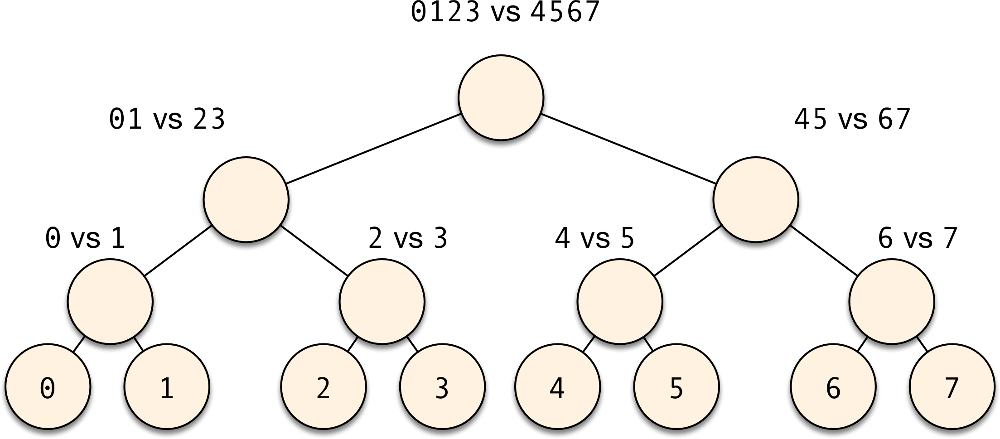

Error-Correcting Output Codes
Often it will be the case that we can model a process we care about as two parties communicating with one another over a noisy channel. Sometimes this is very straightforward: if you’re sending the content of a website to a cellphone, the radio in the cellphone will need to be able to figure out when the message was garbled, and will need to figure out how to fix it. Surprisingly, some techniques in data science also benefit from this change in perspective.
Consider the problem of creating a classifier that can distinguish between more than two classes. We could try to solve this problem from first principles and build that classifier “from nothing”. But if we already know how to build binary classifiers, then we could try to turn the problem of multiple classification into (many instances of) binary classification. The usual way of doing this are called “OVA”, and “AVA”], but there’s a different method that sometimes works better, is elegant, simple to explain, and connects directly to the idea of two parties communicating over a noisy channel.
Prelude: Binary-tree reductions
Let’s first introduce a slightly different, but very simple reduction. Let’s work, for now, with the case of an 8-class problem, so the actual class to be predicted is one of 0, 1, 2, 3, 4, 5, 6, or 7. What we will do is create a binary tree of decisions, where we will train a binary classifier for each of the nodes. The decisions of each classifier will determine the path that we will walk down the tree, and downstream branches will progressively narrow the set of possible choices. The leaves of this tree represent single classes, and the decision of the overall classifier.
Graphically, it looks like this:

If you compare this scheme to the OVA and AVA ideas, you can notice a few similarities and a few differences.
First, the number of classifiers you need to train in this scheme is comparable to that of OVA (in a binary tree with \(k\) leaves, there are always \(k-1\) nodes).
In OVA, all classifiers are unbalanced, in that you’re training “class-\(i\) vs. class-not-\(i\)” subproblems. Here, your classification problems are all balanced. The leaves of the binary tree classifier are identical to some of the AVA classifiers, but the internal nodes combine multiple classes. This can be both good and bad: it’s bad in that if you have multiple classes that look very different from one another, you’ll be trying to “teach your classifier more than one thing at once”. That’s not great. But if the classes in the same side of the internal nodes are similar enough, then combining them means that the training process for that node will be able to “share knowledge from its lessons”. And that’s a good thing.
Unlike OVA or AVA, the number of decisions you need to make at test time is quite small. Here, the path from the tree root to a leaf has \(O(\log k)\) nodes, while OVA needs \(O(k)\) classifiers, and AVA, \(O(k^2)\). This means that if your binary classifiers achieve an error rate of \(\epsilon\), then you can trivially see that the multiclass classifier will achieve an error rate of \(O(\log k) \epsilon\).
Reducing the number of base classifiers
Now let’s make things a little weird. Say that you think your base binary classifier procedure is so good, that it will be able to distinguish between any partition of classes from the original problem that you give it. What’s the minimum number of classifiers you have to train? It is easy to see what that number must be. If you think of the decision of the final multiclass classifier as producing a word in binary, then clearly we need \(O(\log_2 k)\) binary digits to write out that word. But a binary digit is the best we can get out of a binary classifier, so we need \(O(\log_2 k)\) of them as well.
This also clearly suggests the way to build the classifier: write out the multiple class labels in binary representation, and now the job of the \(i\)-th of \(\log_2 k\) binary classifiers is to predict the \(i\)-th digit of that binary representation. This is the same thing as building, for each of the level of the trees in the above example, a single classifier, where that classifier predicts whether to take the branch on the left or the right.
In other words, for the same 8-class problem we had before, we build classifiers that distinguish between:
0123vs.45670145vs.23670246vs.1357
Notice how there’s only one class that’s unique along any possible set of decisions of the binary classifiers. Let’s call this the “binary transmission” method (TODO: find the actual name used in ML).
The magic of error correction
This is pretty neat, but it turns out that the best is still ahead of us! The main thing we will address now is that it’s not always the case that our classifiers will be correct. And unlike the case with AVA and OVA, base-level mistakes in the binary tree and binary transmission methods are always catastrophic.
The problem of transmitting information in the presence of noise has been deeply studied since the early 20th century. The most magical thing about changing perspectives is that it instantly gives us a lot of new tools to think about a problem. So what if we pretend that each binary classifier is sending its result along a telegraph, in which mistakes can happen along the way? Then, the problem of fixing a transmission mistake looks equivalent to the problem of making a classifier error. So, if we can fix a transmission mistake even if every digit can fail, we might be able to fix a multiclassifier mistake, even if every binary classifier can fail!.
In the following, we will look at a very simple error-correcting code. The state of the art for error correcting in multiclass classifiers is much more complicated than this, but the principle is the same.
The idea itself behind error correcting codes is simple. Say we want to transmit a word that can be one of 000, 001, 010, 011, 100, 101, 110, or 111. We will model a transmission error as flipping one of the bits of those words. If we send this representation directly, then any errors that happen in the transmission will become indistinguishable from a successful transmission of a different message. This is a problem, because we won’t even know when something bad happens. It needs to be possible for our communication process to know, by looking at the transmitted word, that something wrong happened. So there needs to be enough room in the space of possible messages for the case where “bad stuff happened”. This means that we will have to encode the word we want to send into a bigger space of possible transmissions, a space with more room.
In addition, in this new space of possible transmission, every codeword should be far away from one another (where we measure distance by flipping bits, the same process that we assume was introducing mistakes), because we want to give every codeword a “safety cushion” for errors, so that if we get a bad transmission, there’s only one codeword nearby, so we will know how to correct that mistake.
There are simple error detection methods, like sending the same message three times. If any of the words disagree with one another, then we know a mistake happened somewhere (and we correct it by majority voting).
This, however, is not a very efficient code, and most importantly, it will not work in the case of multiclass classification! When sending messages on radio, each error happens (well, kinda) independently of one another. But in our case, a mistake happens when a classifier does badly for a given example. So if we just try to “send the same digit three times”, it’ll be the case that if we make a mistake once, then we will make it three times! We need to come up with a better method. (Specifically, I will describe below the Hamming(7,4) code.)
Let’s not repeat digits
The code I’m going to describe to you works on 4-bit words, so for now let’s pretend that our original problem had 16 classes instead of 8. The encoding process is itself very easy to describe. We send the 4-bit word into a 7-bit space:
- \(A = d\_1\ \textrm{xor}\ d\_2\ \textrm{xor}\ d\_4\)
- \(B = d\_1\ \textrm{xor}\ d\_3\ \textrm{xor}\ d\_4\)
- \(C = d\_2\ \textrm{xor}\ d\_3\ \textrm{xor}\ d\_4\)
- \(D = d\_1\)
- \(E = d\_2\)
- \(F = d\_3\)
- \(G = d\_4\)
Here, \(d\_1\) through \(d\_4\) are the digits of the word we want to send. As we argued above, it must be the case that this code is redundant. Indeed, any valid word respects the following equations:
- \(A\ \textrm{xor}\ D\ \textrm{xor}\ E\ \textrm{xor}\ G = 0\)
- \(B\ \textrm{xor}\ D\ \textrm{xor}\ F\ \textrm{xor}\ G = 0\)
- \(C\ \textrm{xor}\ E\ \textrm{xor}\ F\ \textrm{xor}\ G = 0\)
These equations are easy to prove: remember that \(\textrm{xor}\) is commutatitive and associative, and that \(a\ \textrm{xor}\ a = 0\). Moreover, the equations are also the key to making error detection work. Here’s a minor modification we will make. Let’s assume that an error can happen on any digit we send, so we replace \(A\) with \(\tilde{A}\), etc:
- \(\tilde{A} = \epsilon_A\ \textrm{xor}\ d\_1\ \textrm{xor}\ d\_2\ \textrm{xor}\ d\_4\)
- \(\tilde{B} = \epsilon_B\ \textrm{xor}\ d\_1\ \textrm{xor}\ d\_3\ \textrm{xor}\ d\_4\)
- \(\tilde{C} = \epsilon_C\ \textrm{xor}\ d\_2\ \textrm{xor}\ d\_3\ \textrm{xor}\ d\_4\)
- \(\tilde{D} = \epsilon_D\ \textrm{xor}\ d\_1\)
- \(\tilde{E} = \epsilon_E\ \textrm{xor}\ d\_2\)
- \(\tilde{F} = \epsilon_F\ \textrm{xor}\ d\_3\)
- \(\tilde{G} = \epsilon_G\ \textrm{xor}\ d\_4\)
Here, we use \(\epsilon\_A\), \(\epsilon\_B\), etc. to model errors in our transmission. The code we are describing here can only correct mistakes if only one of them happens at a time. That means that for every transmission, either \(\epsilon\_A = \epsilon\_B = \cdots = 0\), or a single one of the \(\epsilon\) variables is one and all the others are still zero.
This is where the magic happens. Let’s say \(\epsilon_A = 1\). Although it seems like it will be hard to figure out that something went wrong (since the 7-bit word we transmitted “looks fine”), let’s look at those three equations that we derived which describe the redundancy in the code. Now, consider their equivalents with \(\tilde{A}\), etc. I’m also giving each term a name now, \(c\_0\) through \(c\_2\):
- \(c\_0 = \tilde{A}\ \textrm{xor}\ \tilde{D}\ \textrm{xor}\ \tilde{E}\ \textrm{xor}\ \tilde{G} = \epsilon\_{A}\ \textrm{xor}\ \epsilon\_{D}\ \textrm{xor}\ \epsilon\_{E}\ \textrm{xor}\ \epsilon\_{G}\)
- \(c\_1 = \tilde{B}\ \textrm{xor}\ \tilde{D}\ \textrm{xor}\ \tilde{F}\ \textrm{xor}\ \tilde{G} = \epsilon\_{B}\ \textrm{xor}\ \epsilon\_{D}\ \textrm{xor}\ \epsilon\_{F}\ \textrm{xor}\ \epsilon\_{G}\)
- \(c\_2 = \tilde{C}\ \textrm{xor}\ \tilde{E}\ \textrm{xor}\ \tilde{F}\ \textrm{xor}\ \tilde{G} = \epsilon\_{C}\ \textrm{xor}\ \epsilon\_{E}\ \textrm{xor}\ \epsilon\_{F}\ \textrm{xor}\ \epsilon\_{G}\)
Notice two very important things on the right hand sides: every error variable appears at least once, and no error variable was cancelled out from appearing more than once in the left-hand sides.
There’s also a less immediate property of these \(c\) variables: every possible mistake case creates a different configuration of \(c\_0\), \(c\_1\), and \(c\_2\)! This is truly remarkable, and you should check it for yourself, by setting the values of \(\epsilon\_A\) through \(\epsilon\_G\) to 1. For example, you should be able to convince yourself that if \(c\_0 = 0\), \(c\_1 = 1\), and \(c\_2 = 1\), then it must be the case that \(\epsilon\_{F} = 1\), which means that the mistake happened on \(\tilde{F}\), which in turn means that all we have to do is flip \(\tilde{F}\) to obtain \(F\), and all other digits must be correct! If all \(c\)s are zero, then no error happened. (Again, we are assuming that errors happen only one at a time. Fate is not always this kind.)
Now to turn this into a multiclass reduction
The final remarkable property of this error-correcting code is that each digit in the new transmission is formed by a particular combination of the digits in the original problem. Let’s think of the binary classification problems in the “binary transmission” reduction. (Here, I’ll slip into hexadecimal notation and call the 16 classes 0123456789abcdef):
- \(d_1\): 01234567 vs. the negative: 89abcdef
- \(d_2\): 0123 89ab vs. the negative: 4567 cdef
- \(d_3\): 01 45 89 cd vs. the negative: 23 67 ab ef
- \(d_4\): 0 2 4 6 8 a c e vs. the negative: 1 3 5 7 9 b d f
(The whitespace is there simply to make the logic more apparent.) These are our “base-digits” classifiers. The “checksum-digit” classifiers, that is, the redundant classifiers we will build to let us fix mistakes, will use the \(\textrm{xor}\) operation as well. Concretely speaking, the classifier for \(d\_1\ \textrm{xor}\ d\_2\ \textrm{xor}\ d\_4\) (that is, our transmitted digit \(\tilde{A}\) above) should return a positive label when \(d\_1\ \textrm{xor}\ d\_2\ \textrm{xor}\ d\_4 = 1\), or equivalently, it should separate the classes 02579bce from 13468adf.
Take a moment to convince yourself of why that makes sense: that split separates the classes that appear in \(d\_1\), \(d\_2\), or \(d\_4\) an odd number of times from those that appear there an even number of times. In other words, this classifier will “attempt to send 1” if \(d\_1\ \textrm{xor}\ d\_2\ \textrm{xor}\ d\_4 = 1\), and “attempt to send 0” if \(d\_1\ \textrm{xor}\ d\_2\ \textrm{xor}\ d\_4 = 0\), exactly like our communication example!
Now, every time any one of our classifiers makes an isolated mistake, we will be able to spot it and fix it, at the expense of training only three more classifiers. And all of these classifiers are trained on different label distributions, and so we don’t run into the issue of repeated classification mistakes (like we would if we used the “repeat transmission” code).
Isn’t that amazing?
Further reading
There are a number of details that have to be handled when actually deploying this strategy. The main one is that the choice on how to order the classes to create those splits is quite important, both because we need the individual classifiers to be good, and because we need digit errors to be relatively uncorrelated to one another.
In practice, what the literature suggests is to invent a new custom code for every multiclass classification problem. This is easier than it looks, and if you’re interested, then Dietterich and Bakiri’s seminal paper is what you should read next. This technique is now known as ECOC (“error-correcting output codes”).
The question of whether ECOC’s are the best we can do remained open for a while, and although it’s still not completely settled, a (much more complicated) solution that combines error correction with the binary tournament idea from above gets pretty close to optimal. These are error-correcting tournaments, proposed by Beygelzimer et al. I confess I don’t actually understand ECTs all that well, but the good news is that at least they’re implemented in Vowpal Wabbit. If each of the base classifiers achieves an average error rate of \(\epsilon\), error-correcting tournaments achieve a multiclass error bound of \(2 \epsilon\). This is independent of the number of classes in the multiclass problem, which is quite incredible.
Notes
- The reason we can’t use the “repeat the same message more than once” trick is that we assumed we were always training the same classifier. If you have two binary classifiers for the same problem that both predict reasonably well, and whose predictions are relatively uncorrelated, then you can absolutely use this “repeat message” method. This turns out to work incredibly well in practice!